Project
IoT Water Well Control Station — Autonomous Pump Control & Real-Time Monitoring
Personal Project — Embedded Systems & Industrial IoT, 2024
It started with a single sensor. The JSN-SR04T — a waterproof
ultrasonic distance sensor — caught my attention because of one property that most
ultrasonic modules lack: it can be fully submerged in a hostile environment and
still return a reliable distance reading. The question that followed was natural —
if you can measure water level accurately in real time, why would anyone still be
manually switching a pump on and off?
The first phase was validation. I wired the JSN-SR04T to a microcontroller, pushed
the readings over Wi-Fi to Blynk, and confirmed that the sensor
delivered stable, continuous level data directly to a mobile dashboard. That proof
of concept became the sensing backbone of something larger.
The second phase was the control station. I designed and assembled a complete
Water Well Control Unit inside a sealed IP-rated enclosure —
housing a 5V regulated power supply, a microcontroller, a dual-relay module, an
RS485 communication module, and all necessary terminal blocks for field wiring.
The two relays were wired in parallel with the physical ON/OFF buttons
of the main electrical contactor — meaning the system could command
the pump to start or stop exactly as an operator would, without touching the
existing electrical installation.
The logic was simple and reliable: when the water level drops below a defined
low threshold, the station starts the pump automatically; when the level reaches
the high threshold, it stops it — creating a fully autonomous fill-and-hold
control loop. But the station did not stop at control. Through electrical
monitoring, users received real-time consumption data and live
network status — detecting power outages, voltage fluctuations, and motor
anomalies the moment they occurred, all visible remotely on the Blynk application.
The result was a system that replaced a manual daily task with a reliable,
connected, self-managing process.
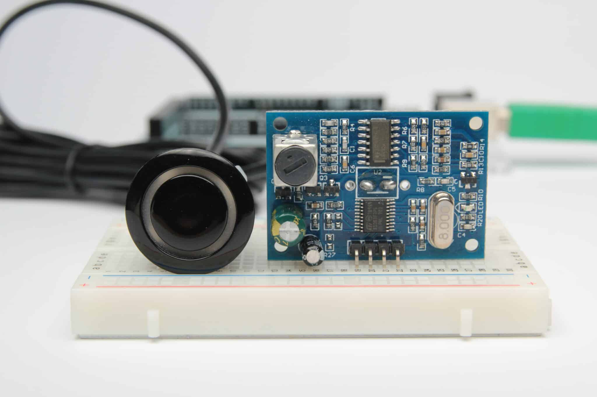
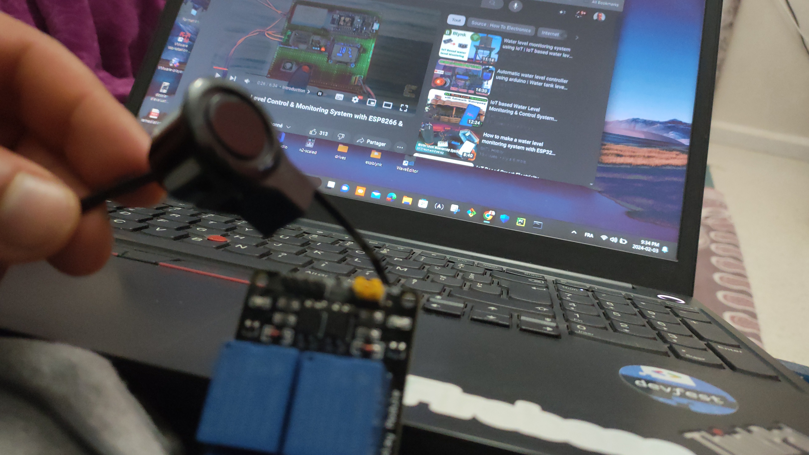
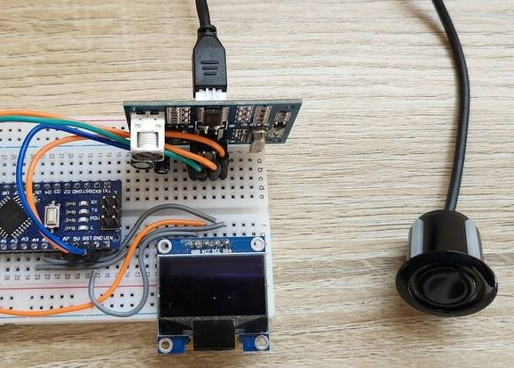
#include "MedianFilter.h" //replace "" with <> in Arduino IDE
#define BLYNK_TEMPLATE_ID ""
#define BLYNK_TEMPLATE_NAME ""
#define BLYNK_AUTH_TOKEN ""
// Your WiFi credentials.
// Set password to "" for open networks.
char ssid[] = "DESKTOP-UA412LC 5324";
char pass[] = "omar1234";
/* Comment this out to disable prints and save space */
#define BLYNK_PRINT Serial
#include "SoftwareSerial.h" //replace "" with <> in Arduino IDE
SoftwareSerial mySerial(3, 1);
#include "ESP8266WiFi.h" //replace "" with <> in Arduino IDE
#include "BlynkSimpleEsp8266.h" //replace "" with <> in Arduino IDE
const unsigned int TRIG_PIN = 13; // RX
const unsigned int ECHO_PIN = 12; // TX
//const unsigned int BAUD_RATE = 9600;
void setup()
{
pinMode(TRIG_PIN, OUTPUT);
pinMode(ECHO_PIN, INPUT);
// Debug console
Serial.begin(9600);
mySerial.begin(115200);
Blynk.begin(BLYNK_AUTH_TOKEN, ssid, pass);
// You can also specify server:
//Blynk.begin(BLYNK_AUTH_TOKEN, ssid, pass, "blynk.cloud", 80);
//Blynk.begin(BLYNK_AUTH_TOKEN, ssid, pass, IPAddress(192,168,1,100), 8080);
}
void loop()
{
Blynk.run();
measureDistance() ;
}
void measureDistance() {
digitalWrite(TRIG_PIN, LOW);
delayMicroseconds(2);
digitalWrite(TRIG_PIN, HIGH);
delayMicroseconds(10);
digitalWrite(TRIG_PIN, LOW);
const unsigned long duration = pulseIn(ECHO_PIN, HIGH);
int distance = duration / 29 / 2;
if (duration == 0) {
Serial.println("Warning: no pulse from sensor");
} else {
Serial.print("Distance to nearest object: ");
Serial.println(distance);
Serial.println(" cm");
}
delay(500);
Blynk.virtualWrite(V7, distance); // Send distance value to Blynk Virtual Pin V7
}
- Identified and validated the JSN-SR04T waterproof ultrasonic sensor as a reliable solution for continuous water level measurement in harsh, submerged environments — replacing manual level checking entirely.
- Built an initial proof-of-concept transmitting live sensor readings to a Blynk mobile dashboard over Wi-Fi, confirming stable real-time data delivery before scaling to a full control system.
- Designed and assembled a complete Water Well Control Station inside a sealed IP-rated enclosure, integrating a switching PSU, microcontroller, dual-relay module, RS485 module, and field terminal blocks.
- Wired dual relays in parallel with the existing contactor's manual ON/OFF buttons — enabling software-controlled pump switching without modifying the original electrical installation.
- Implemented an autonomous hysteresis control loop: pump starts automatically at low-level threshold and stops at high-level threshold, eliminating daily manual intervention entirely.
- Integrated real-time electrical monitoring to expose live consumption data and network health — detecting power outages, voltage anomalies, and motor dysfunctions remotely through the mobile application.
- Delivered a self-managing, remotely monitored system that combines embedded sensing, relay actuation, and IoT connectivity into a single field-deployable control unit.
Energy
Real-Time Power Monitoring System — PZEM-016 · RS485 · Arduino
Personal Project — Electrical Energy Measurement & Risk Management, March 2024
An electrical cabinet that delivers power is half the job. Knowing exactly
how much power it is delivering — in real time, per machine, per circuit —
is the other half. This personal project was built around that idea: using
a Peacefair PZEM-016 power meter and a
TTL-to-RS485 converter interfaced with an
Arduino UNO to build a complete real-time electrical
monitoring system.
The PZEM-016 measures all the critical parameters simultaneously —
voltage (V), current (A), active power (W), power factor (pf),
and cumulative energy (Wh) — and communicates over the
Modbus RTU protocol via RS485. The TTL-to-RS485 module
bridges the industrial RS485 signal to the Arduino's UART, where a
dedicated C++ program polls the sensor every 2 seconds, parses the
Modbus response frame, and streams all five parameters to the Serial
Monitor with a precise timestamp. The result is a continuous, timestamped
log of the electrical state of any connected load — visible live on screen
and exportable for analysis.
The applications are direct and industrial: consumption monitoring
to detect abnormal draws before they become failures, machine
protection by triggering alerts when current exceeds safe thresholds,
and risk management by logging energy data that reveals
degradation patterns over time — the same philosophy as predictive
maintenance, applied at the electrical measurement layer.
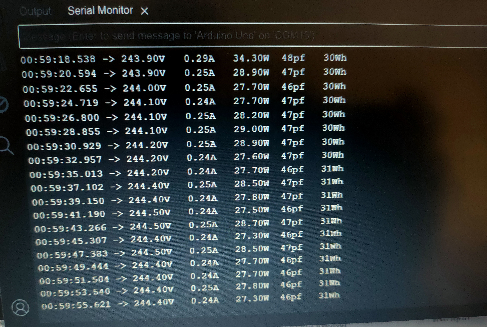
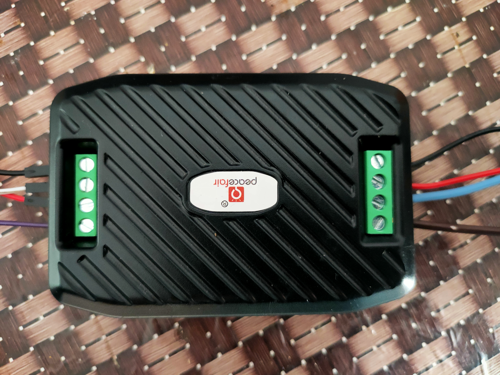
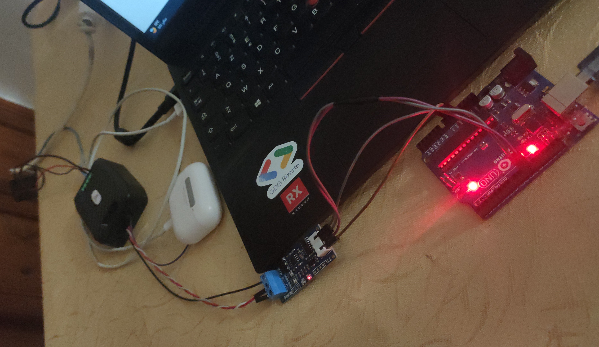
#include "SoftwareSerial.h" //replace "" by <>
SoftwareSerial PZEMSerial(10,11);
/* 1- PZEM-014/016 AC Energy Meter */
#include "ModbusMaster.h" //replace "" by <>
static uint8_t pzemSlaveAddr = 0x01; // Declare the address of device (meter) in term of 8 bits. You can change to 0x02 etc if you have more than 1 energy meter.
ModbusMaster node; /* activate modbus master codes*/
float PZEMVoltage =0; /* Declare value for AC voltage */
float PZEMCurrent =0; /* Declare value for AC current*/
float PZEMPower =0; /* Declare value for AC Power */
float PZEMEnergy=0; /* Declare value for energy */
float PZEMHz =0; /* Declare value for frequency */
float PZEMPf=0; /* Declare value for power factor */
unsigned long startMillisPZEM; /* start counting time for data collection */
unsigned long currentMillisPZEM; /* current counting time for data collection */
const unsigned long periodPZEM = 1000; // refresh data collection every X seconds (in seconds). Default 1000 = 1 second
/* 2 - Data submission to Blynk Server */
unsigned long startMillisReadData; /* start counting time for data collection*/
unsigned long currentMillisReadData; /* current counting time for data collection*/
const unsigned long periodReadData = 1000; /* refresh every X seconds (in seconds) in LED Display. Default 1000 = 1 second */
int ResetEnergy = 0; /* reset energy function */
int a = 1;
unsigned long startMillis1; // to count time during initial start up (PZEM Software got some error so need to have initial pending time)
void setup()
{
/* General*/
startMillis1 = millis();
Serial.begin(9600); /* to display readings in Serial Monitor at 9600 baud rates */
PZEMSerial.begin(9600); // 4 = Rx/R0/ GPIO 4 (D2) & 0 = Tx/DI/ GPIO 0 (D3) on NodeMCU
/* 1- PZEM-014/016 AC Energy Meter */
startMillisPZEM = millis(); /* Start counting time for run code */
// pinMode(MAX485_RE, OUTPUT); /* Define RE Pin as Signal Output for RS485 converter. Output pin means Arduino command the pin signal to go high or low so that signal is received by the converter*/
// pinMode(MAX485_DE, OUTPUT); /* Define DE Pin as Signal Output for RS485 converter. Output pin means Arduino command the pin signal to go high or low so that signal is received by the converter*/
// digitalWrite(MAX485_RE, 0); /* Arduino create output signal for pin RE as LOW (no output)*/
// digitalWrite(MAX485_DE, 0); /* Arduino create output signal for pin DE as LOW (no output)*/
/* both pins no output means the converter is in communication signal receiving mode */
// node.preTransmission(preTransmission); /* Callbacks allow us to configure the RS485 transceiver correctly*/
// node.postTransmission(postTransmission);
node.begin(pzemSlaveAddr,PZEMSerial); /* Define and start the Modbus RTU communication. Communication to specific slave address and which Serial port */
delay(1000); /* after everything done, wait for 1 second */
/* 2 - Data submission to Blynk Server */
startMillisReadData = millis(); /* Start counting time for data submission to Blynk Server*/
}
void loop()
{
/* 0- General */
//Blynk.run();
//PZEM_act(0x01); /* allow the communication between Blynk server and Node MCU */
if ((millis()- startMillis1 >= 10000) && (a ==1))
{
// changeAddress(0XF8, pzemSlaveAddr); // By delete the double slash symbol, the meter address will be set as 0x01.
// By default I allow this code to run every program startup. Will not have effect if you only have 1 meter
a = 0;
}
/* 1- PZEM-014/016 AC Energy Meter */
currentMillisPZEM = millis(); /* count time for program run every second (by default)*/
if (currentMillisPZEM - startMillisPZEM >= periodPZEM) /* for every x seconds, run the codes below*/
{
uint8_t result; /* Declare variable "result" as 8 bits */
result = node.readInputRegisters(0x0000, 9); /* read the 9 registers (information) of the PZEM-014 / 016 starting 0x0000 (voltage information) kindly refer to manual)*/
if (result == node.ku8MBSuccess) /* If there is a response */
{
uint32_t tempdouble = 0x00000000; /* Declare variable "tempdouble" as 32 bits with initial value is 0 */
PZEMVoltage = node.getResponseBuffer(0x0000) / 10.0; /* get the 16bit value for the voltage value, divide it by 10 (as per manual) */
// 0x0000 to 0x0008 are the register address of the measurement value
tempdouble = (node.getResponseBuffer(0x0002) << 16) + node.getResponseBuffer(0x0001); /* get the currnet value. Current value is consists of 2 parts (2 digits of 16 bits in front and 2 digits of 16 bits at the back) and combine them to an unsigned 32bit */
PZEMCurrent = tempdouble / 1000.00; /* Divide the value by 1000 to get actual current value (as per manual) */
tempdouble = (node.getResponseBuffer(0x0004) << 16) + node.getResponseBuffer(0x0003); /* get the power value. Power value is consists of 2 parts (2 digits of 16 bits in front and 2 digits of 16 bits at the back) and combine them to an unsigned 32bit */
PZEMPower = tempdouble / 10.0; /* Divide the value by 10 to get actual power value (as per manual) */
tempdouble = (node.getResponseBuffer(0x0006) << 16) + node.getResponseBuffer(0x0005); /* get the energy value. Energy value is consists of 2 parts (2 digits of 16 bits in front and 2 digits of 16 bits at the back) and combine them to an unsigned 32bit */
PZEMEnergy = tempdouble;
PZEMHz = node.getResponseBuffer(0x0007) / 10.0; /* get the 16bit value for the frequency value, divide it by 10 (as per manual) */
PZEMPf = node.getResponseBuffer(0x0008) / 100.00; /* get the 16bit value for the power factor value, divide it by 100 (as per manual) */
/* 2 - Data submission to Blynk Server
currentMillisReadData = millis(); // Set counting time for data submission to server
if (currentMillisReadData - startMillisReadData >= periodReadData) // for every x seconds, run the codes below*/
//{
Serial.print("Vac : "); Serial.print(PZEMVoltage); Serial.println(" V ");
Serial.print("Iac : "); Serial.print(PZEMCurrent); Serial.println(" A ");
Serial.print("Power : "); Serial.print(PZEMPower); Serial.println(" W ");
Serial.print("Energy : "); Serial.print(PZEMEnergy); Serial.println(" Wh ");
Serial.print("Power Factor : "); Serial.print(PZEMPf); Serial.println(" pF ");
Serial.print("Frequency : "); Serial.print(PZEMHz); Serial.println(" Hz ");
// startMillisReadData = millis(); /* Set the starting point again for next counting time */
// }
if (pzemSlaveAddr==2) /* just for checking purpose to see whether can read modbus*/
{
Serial.println();
}
}
else
{
Serial.println("Failed to read modbus");
}
startMillisPZEM = currentMillisPZEM ; /* Set the starting point again for next counting time */
}
}
//void preTransmission() transmission program when triggered*/
/*{
1- PZEM-014/016 AC Energy Meter
if(millis() - startMillis1 > 5000) // Wait for 5 seconds as ESP Serial cause start up code crash
{
digitalWrite(MAX485_RE, 1); put RE Pin to high
digitalWrite(MAX485_DE, 1); put DE Pin to high
delay(1); // When both RE and DE Pin are high, converter is allow to transmit communication
}
}*/
/*void postTransmission() /* Reception program when triggered
{
/* 1- PZEM-014/016 AC Energy Meter */
/* if(millis() - startMillis1 > 5000) // Wait for 5 seconds as ESP Serial cause start up code crash
{
delay(3); // When both RE and DE Pin are low, converter is allow to receive communication
digitalWrite(MAX485_RE, 0); /* put RE Pin to low
digitalWrite(MAX485_DE, 0); /* put DE Pin to low
//}
}*/
void PZEM_act(uint8_t slaveAddr) // Virtual push button is defined as V7 of Blynk App. When the button is pushed, it will activate the codes
{
uint16_t u16CRC = 0xFFFF; /* declare CRC check 16 bits*/
static uint8_t resetCommand = 0x42; /* reset command code*/
// uint8_t slaveAddr =pzemSlaveAddr;
u16CRC = crc16_update(u16CRC, slaveAddr);
u16CRC = crc16_update(u16CRC, resetCommand);
// preTransmission(); /* trigger transmission mode*/
PZEMSerial.write(slaveAddr); /* send device address in 8 bit*/
PZEMSerial.write(resetCommand); /* send reset command */
PZEMSerial.write(lowByte(u16CRC)); /* send CRC check code low byte (1st part) */
PZEMSerial.write(highByte(u16CRC)); /* send CRC check code high byte (2nd part) */
delay(10);
// postTransmission(); /* trigger reception mode*/
delay(100);
while (PZEMSerial.available())
{
Serial.print(char(PZEMSerial.read()), HEX);
Serial.print(" ");
}
}
void changeAddress(uint8_t OldslaveAddr, uint8_t NewslaveAddr) //Change the slave address of a node
{
/* 1- PZEM-014/016 AC Energy Meter */
static uint8_t SlaveParameter = 0x06; /* Write command code to PZEM */
static uint16_t registerAddress = 0x0002; /* Modbus RTU device address command code */
uint16_t u16CRC = 0xFFFF; /* declare CRC check 16 bits*/
u16CRC = crc16_update(u16CRC, OldslaveAddr); // Calculate the crc16 over the 6bytes to be send
u16CRC = crc16_update(u16CRC, SlaveParameter);
u16CRC = crc16_update(u16CRC, highByte(registerAddress));
u16CRC = crc16_update(u16CRC, lowByte(registerAddress));
u16CRC = crc16_update(u16CRC, highByte(NewslaveAddr));
u16CRC = crc16_update(u16CRC, lowByte(NewslaveAddr));
//preTransmission(); /* trigger transmission mode*/
PZEMSerial.write(OldslaveAddr); /* these whole process code sequence refer to manual*/
PZEMSerial.write(SlaveParameter);
PZEMSerial.write(highByte(registerAddress));
PZEMSerial.write(lowByte(registerAddress));
PZEMSerial.write(highByte(NewslaveAddr));
PZEMSerial.write(lowByte(NewslaveAddr));
PZEMSerial.write(lowByte(u16CRC));
PZEMSerial.write(highByte(u16CRC));
delay(10);
//postTransmission(); /* trigger reception mode*/
delay(100);
while (PZEMSerial.available())
{
Serial.print(char(PZEMSerial.read()), HEX);
Serial.print(" ");
}
}
- Designed and built a real-time electrical power monitoring system using a Peacefair PZEM-016 AC power meter, a TTL-to-RS485 converter, and an Arduino UNO — communicating over the Modbus RTU industrial protocol.
- Programmed the full Modbus RTU polling logic in C++ on Arduino — sending query frames to the PZEM-016 every 2 seconds, parsing the response, and extracting 5 simultaneous measurements: voltage, current, active power, power factor, and cumulative energy (Wh).
- Achieved timestamped real-time logging of all electrical parameters to the Arduino Serial Monitor — providing a continuous, readable data stream suitable for consumption analysis and anomaly detection.
- Demonstrated practical applications in consumption control (detecting overconsumption circuits), machine protection (current threshold monitoring), and predictive maintenance (energy degradation pattern tracking over time).
- Validated the RS485 industrial communication standard in an embedded context — directly applicable to energy monitoring modules inside electrical cabinets, smart meters, and industrial IoT gateways.
Project
GSM → IoT Upgrade — GPRS/MQTT Remote Pump Control via Blynk
Embedded Systems & Industrial IoT — SIM900A / Arduino / MQTT, 2021
Two years after building the GSM remote control system, I came back to it with
a question that engineers ask when a working solution is no longer good enough:
what would it take to make this better?
The SMS-based architecture worked. A text message crossed the GSM network,
an Arduino parsed it, a relay closed, a pump started. But the model had a
ceiling. Commands were fire-and-forget. There was no acknowledgement, no
dashboard, no live status — just the silence of a relay that may or may not
have operated. Scaling it to more stations meant managing multiple SIM cards
and phone numbers. And the interaction model — composing a text message to
control an industrial pump — felt, with two more years of perspective, like
a workaround rather than a system.
The upgrade I designed for my 2021 year-end project replaced the entire
communication layer while leaving the field hardware untouched. The
SIM900A module — the same module used in the original
system — was no longer used as a voice/SMS modem. Instead, it was
reconfigured via AT commands to open a GPRS data connection
and operate as a TCP/IP client on the cellular data network. Over that
connection, the Arduino establishes an MQTT session with
a broker, subscribes to a control topic, and publishes status feedback —
transforming what was a one-way text message relay into a
bidirectional, real-time IoT node.
The operator interface moved entirely to Blynk — a mobile
IoT platform that abstracts MQTT into a clean, purpose-built dashboard.
A single button widget on the Blynk app publishes to the broker; the Arduino
receives the message, drives the relay, and the pump responds in real time.
The same physical relay wiring from the original project — R0 parallel to
the START button, R1 in series with the STOP contact — remained completely
unchanged. Only the signal that triggered them changed: from an SMS string
parsed character by character to a clean MQTT payload delivered over a live
IP session.
The significance of this upgrade goes beyond the feature set. It demonstrated
a principle that matters in real engineering: a well-designed
field interface does not need to change when the control layer evolves.
The contactor, the relay, the safety chain — all untouched. What changed
was the intelligence above them. SMS became MQTT. A phone number became a
topic. A text message became a dashboard button. And a system that could
only be operated by someone who knew which number to text became one that
any authorised user could control from anywhere in the world, with live
feedback, through an app on their phone.
- Upgraded the 2019 GSM remote control system from SMS-based one-way command delivery to a fully bidirectional GPRS/MQTT IoT architecture — using the same SIM900A hardware module, reconfigured from SMS modem to GPRS TCP/IP client via AT commands.
- Established a live MQTT session over the cellular data network from the Arduino, enabling the microcontroller to subscribe to control topics and publish status feedback in real time — replacing fire-and-forget SMS with a persistent, acknowledged communication channel.
- Integrated Blynk as the operator interface — mapping dashboard button widgets to MQTT publish events, delivering on-demand pump control from any mobile device worldwide without requiring knowledge of SIM numbers or message formatting.
- Preserved the entire field wiring layer from the original project — relay R0 (parallel to START) and R1 (series with STOP) remained unchanged, demonstrating that a clean hardware abstraction allows the control layer to evolve independently of the physical installation.
- Validated the system end-to-end in a live recorded demonstration: Blynk mobile dashboard commanding a well pump over GPRS, with the motor responding in real time — published on YouTube as proof of working operation.
- Demonstrated a core engineering principle: modular system design allows protocol-layer migration without field-level rework — the same contactor, the same safety chain, the same relay interface, now driven by a modern IoT stack instead of raw SMS parsing.
Project
GSM Remote Control System for Industrial Water Pumps — Bachelor Graduation Project
Embedded Systems & Industrial Automation — SIM900 / Arduino Uno, 2019
The problem was deceptively simple: four submersible water pumps, spread across
four boreholes up to 12 kilometres apart, all feeding a single
central reservoir — and every one of them still started and stopped by a human
being physically present at the site. In a region where borehole infrastructure
is critical and operators cannot be everywhere at once, that dependency on
physical presence was not just inconvenient. It was a structural limitation of
the entire water supply system.
For my bachelor graduation project, I chose to remove that limitation entirely
— using nothing more than the GSM network that already covered the region.
The system I designed and built is a distributed embedded control
architecture. At its core sits a pilot unit: an Arduino Uno
microcontroller paired with a SIM900 GSM module,
communicating with the outside world through SMS. When a simple text message
— "ON" or "OFF" — is received, the Arduino parses the incoming message via
AT commands over the serial UART interface and translates it into a precise
electrical action. "ON" triggers Relay R0, whose contacts are
wired in parallel with the physical START button (Bpm) of the motor's control
circuit — momentarily closing the contactor coil KM1 exactly as a finger on
a green button would. "OFF" triggers Relay R1, wired in series
with the physical STOP button (Bpa) of the circuit — breaking the coil supply
and dropping the contactor out cleanly, with no risk of bypassing the
thermal overload relay RT that protects the motor.
The intelligence of this approach is in what it does not touch. The original
electrical installation — the fuse protection CC, the emergency stop AT, the
overload relay, the Schneider contactors KM1 and KM2, the three-phase power
path to the submersible pump — remains exactly as designed, fully intact and
fully protected. The embedded system acts only on the command circuit,
not on the power circuit. This means the safety logic of the original panel
is never compromised: thermal faults still trip, manual overrides still work,
and the system degrades gracefully if the microcontroller is ever unavailable.
Each remote borehole station replicates the same architecture — its own
Arduino receiver, its own SIM900 module, its own dual-relay interface to the
local electrical cabinet — all addressable independently through the GSM
network. The pilot unit broadcasts the command; the receiver units act on
it. The result is a one-to-many remote control topology over
infrastructure that already exists in every corner of the country.
The complete system was validated through a live demonstration: a three-phase
motor controlled entirely by SMS, starting and stopping on command, with LED
status indicators confirming relay state in real time. What began as a
graduation project was, in practice, a functional industrial remote control
unit — built from first principles, documented in full, and demonstrated
working.
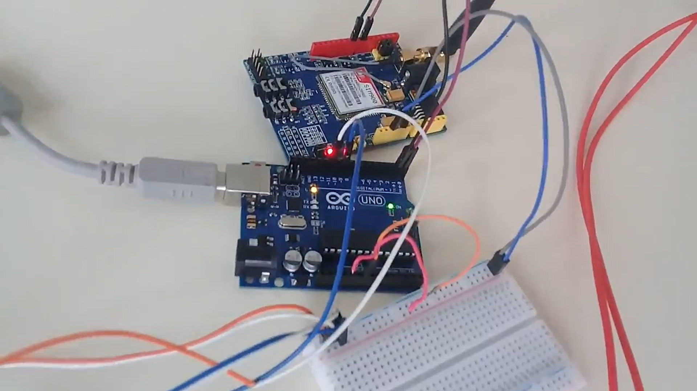
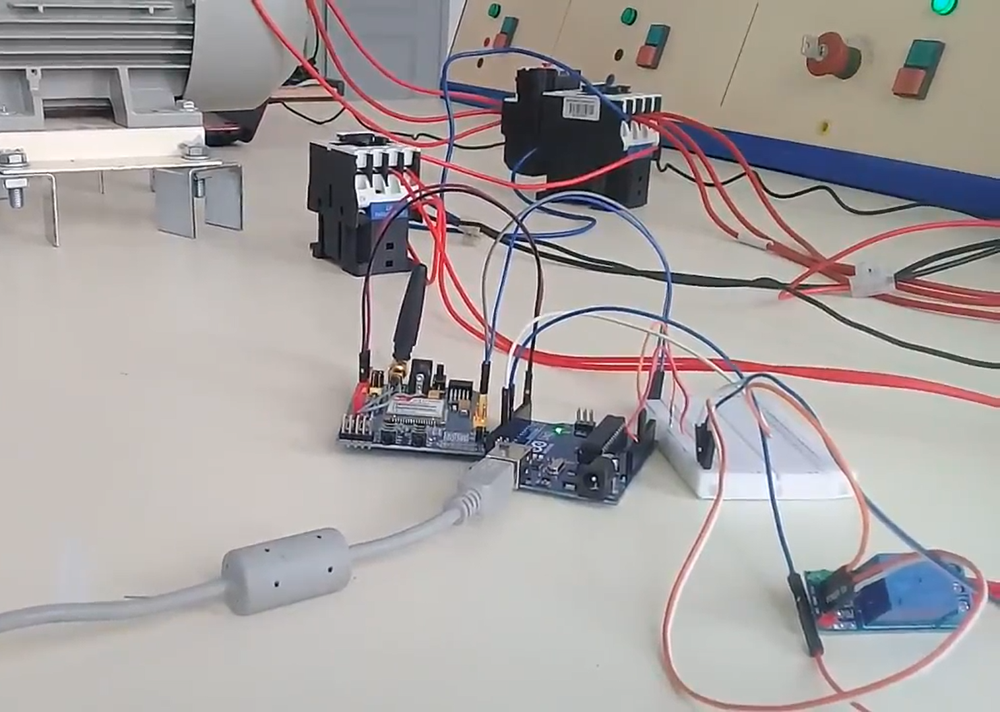
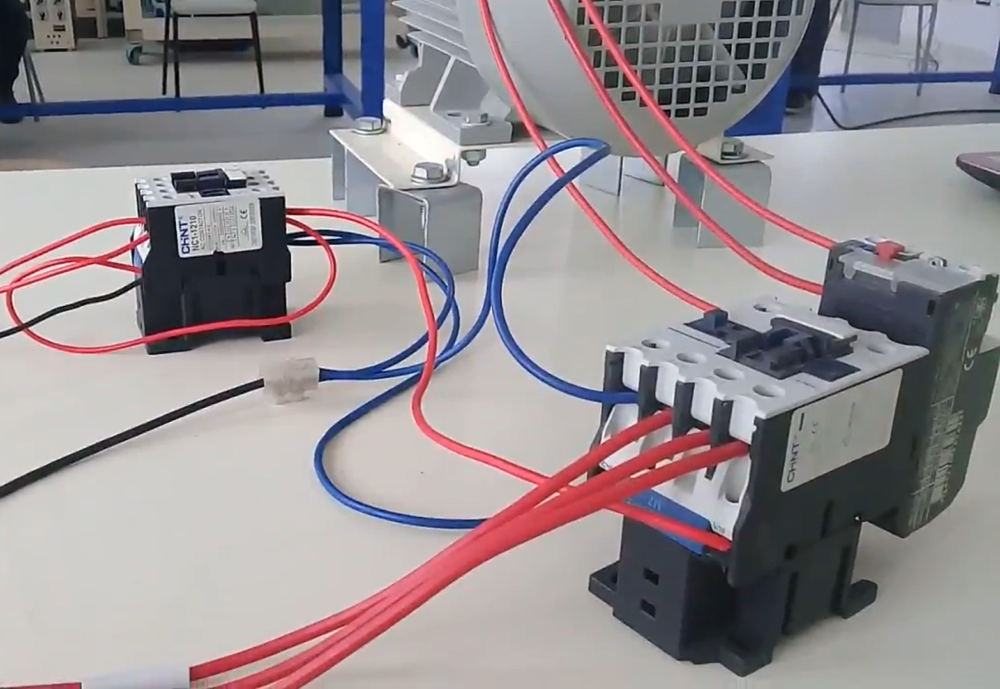
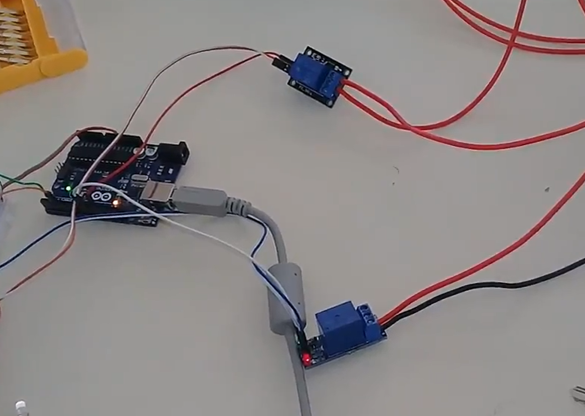
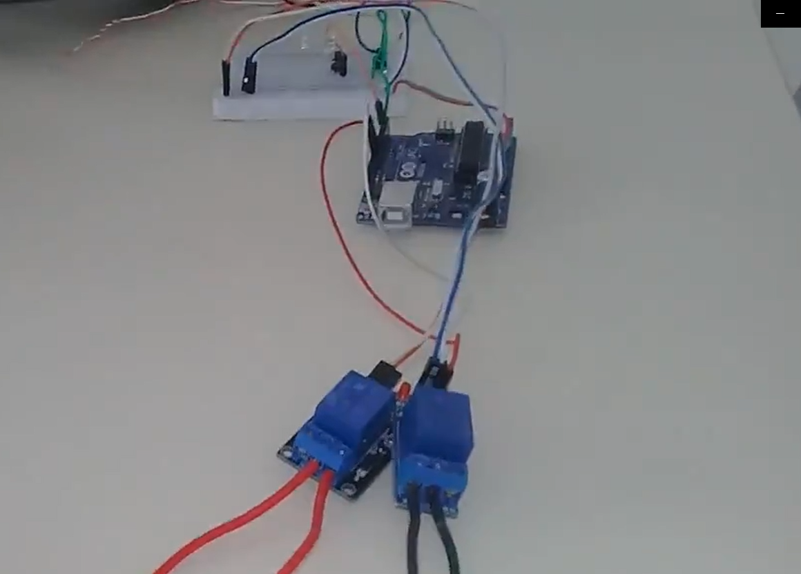
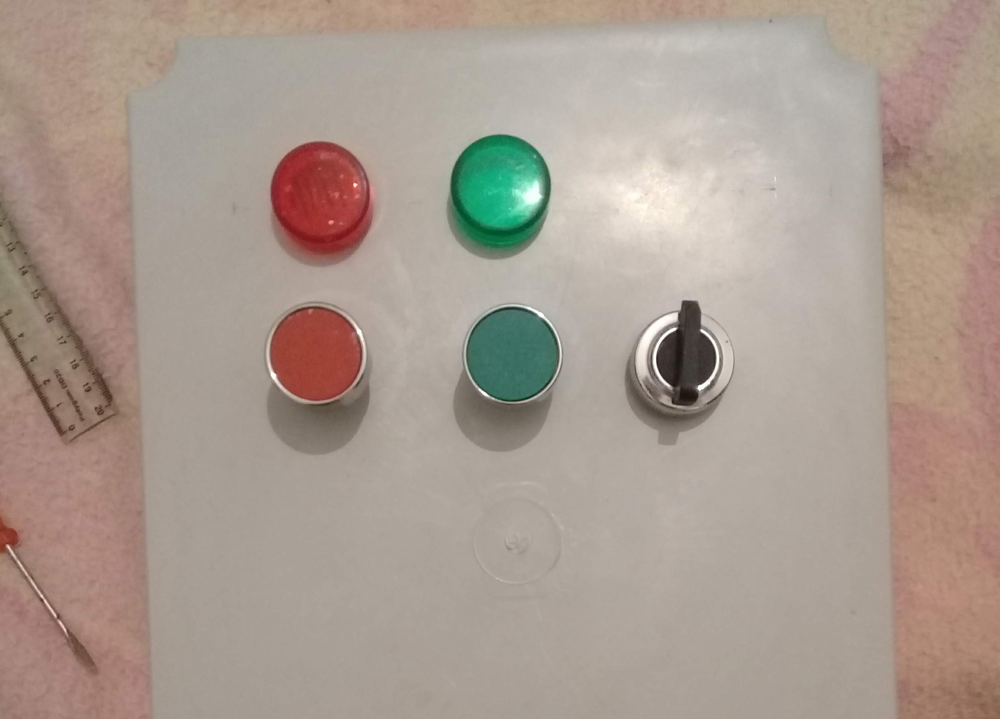
- Designed and built a GSM-based remote control system for industrial submersible water pumps as a bachelor graduation project — addressing the real operational challenge of controlling pump stations spread up to 12 km apart without requiring physical operator presence.
- Architected a distributed embedded system with one pilot unit (Arduino Uno + SIM900) broadcasting SMS commands to multiple independent receiver nodes, each locally controlling its own pump station via the GSM network.
- Implemented a precise relay-to-control-circuit interface: Relay R0 wired in parallel with the physical START button (Bpm) to energise contactor coil KM1 on "ON" command, and Relay R1 wired in series with the STOP contact to de-energise the coil on "OFF" command — replicating manual button actions in software.
- Preserved the full electrical safety chain of the original installation — fuse protection, emergency stop, and thermal overload relay RT remain active and functional — by acting exclusively on the command circuit without modifying the power path.
- Programmed the Arduino to communicate with the SIM900 via AT commands over UART — parsing incoming SMS messages, extracting the command token, and driving the appropriate relay output within the control cycle.
- Hand-assembled a working perfboard prototype integrating the Arduino, SIM900 GSM module, dual relay module, and LED status indicators — fully tested and demonstrated live with a three-phase motor starting and stopping on SMS command.
- Produced a complete design presentation covering the application context, field topology, system block diagram, circuit schematics, and hardware wiring — published a live demonstration video showing end-to-end SMS-to-motor control in operation.